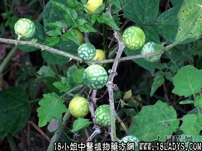

黄果茄(中药材植物名:黄癫茄)(植物科目:茄科)

别名：头晕仔。
植物名：黄颠茄。
生长环境：本品为灌木，生长于较干燥旷地。
分布：广东以广州附近及海南岛较多生长，印度等热带地区亦有。
入药部分：果。
采集期：夏、秋。
自采地点：荒地、郊野。
性味：性温、味甘、有毒。食之令人发闷、头晕。
功能：麻醉止痛、散瘀消肿。
主治、用量和用法：治跌打：生用捣烂，或干用为末，加糯米粉、酒煮热，敷患处。
（方歌）消肿镇痛黄果茄，跌打肿红痛自嗟，捣烂成糊和糯粉，加烧酒煮热敷些。
附录：（根）治跌打新旧患：干根茎3钱至1两，清水煎服，有止痛散瘀作用，或加猪瘦肉，鸡肉同煎服。